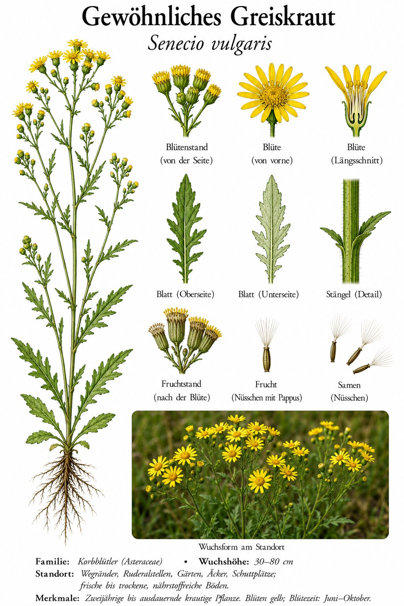

Das Unkraut, das fast das ganze Jahr blüht — und auf vielen Beeten zuhause ist.

Das ganze Jahr im Garten
Während die meisten Wildkräuter nur ein paar Monate blühen, schafft das Greiskraut fast 12 — von Januar bis Dezember. Wenn ein paar Tage mild sind, treibt es schon wieder Blüten. Diese irre Produktivität macht es zum häufigsten „Unkraut“ in Gemüsebeeten und Gärten. Eine einzige Pflanze produziert 1.000–2.000 Samen, die alle keimen können — daher die schnelle Vermehrung.
Warum „Greis-kraut“?
Wenn die Pflanze verblüht und Samen ansetzt, entwickelt sie einen weißlich-grauen Haarschopf — als hätte sie graue Haare bekommen. Daher „Greis-kraut“: die Pflanze, die im Alter ergraut. Dieser Pappus ist wie bei Löwenzahn ein Fallschirm zur Verbreitung der Samen — der Wind trägt sie weit, daher die schnelle Eroberung neuer Flächen.
Wissenswertes & Merksätze
Erkennen leicht gemacht
Aufrechter, oft verzweigter Stängel (10–40 cm). Blätter wechselständig, tief fiederteilig, an Pferdezahn-Lappen erinnernd. Blütenkörbchen klein (5–6 mm), ohne Strahlblüten, gelb. Bei Reife: weiß-graue Pappushaare.
Achtung Giftpflanze
Senecio-Arten enthalten Pyrrolizidinalkaloide, die leberschädlich sind. Niemals als Salat oder Tee — auch nicht aus dem Garten. Für Vieh meiden, vor allem Pferde. Wer Greiskraut im Pferde- oder Heu-Bereich findet: ausreißen und entsorgen.